被政治性發明的「黃種人」色碼：從布盧門巴赫偽科學到《葉問4》膚色反轉的視覺除錯報告
目錄
隨便點選下方其中一個主題便能快速跳到該主題的說明區
前言
「黑眼睛、黑頭髮、黃皮膚」這樣的描述，長久以來被視為東亞人的典型特徵。然而，只要稍微觀察現實，就會發現這種說法與實際情況存在明顯落差。
VIDEO
當我們再進一步把視角放到影視作品與全球審美，就會看到更多耐人尋味的矛盾：
所謂「黃種人」，其實往往膚色白皙
所謂「白種人」，卻常以小麥色為美
電影中的種族衝突，甚至與畫面呈現的膚色不一致
這些矛盾指向同一件事：外貌的意義，並不是自然的，而是被文化與社會所建構。
一、 生理硬體明明很白，為何我們被稱為「黃種人」？——一場歷史與人種色碼的洗產地騙局
在日常觀察與常規生理硬體中，多數東亞人的膚色其實非常白皙，接近象牙色、米色或淺膚色。正如當代大眾利用 AIGC 盲測生成東亞古裝神仙或動漫女性時，系統在完全不限制外貌提示的情況下，100% 預設吐出來的都是極致粉白、毫無瑕疵的皮膚（如本網頁第三章下方的 AI 盲測影片所示）。
既然生理事實如此白皙，控制我們大腦、讓我們從小到大自認是「黃皮膚」的思想鋼印，到底是怎麼被編譯進來的？這本質上是一場由近代西方中心主義所主導的「政治性美學閹割」。
18 世紀以前的真實 Data： "White"（白色的） ，甚至直言東亞人的白皙程度與歐洲人在生理上毫無二致。
西方強權的「強制 Override」： 布盧門巴赫（Blumenbach） 在將人類劃分為五大人種時，教條式地想建立一個「以西北歐白人為至高神聖中心」的階級金字塔。為了在字面和視覺權力上，將同樣白皙、甚至比歐洲人更精緻的東亞人「踢出」高貴的白色命名空間（Namespace），他故意在文獻中選用了一個帶有微弱負面、萎黃、不潔含意的拉丁詞彙來重新定義東亞人。
歷史除錯結論： 政治美學使用者介面（UI） 。大眾消費了幾百年的標籤，本身就是一個嚴重的認知系統錯誤（Type Mismatch）。
二、審美反轉：為何白人追求小麥色？
1. 歷史轉變
在歐洲早期社會：
但到了現代：
小麥色＝有時間戶外活動與度假
象徵健康、自由與生活品質
2. 現代審美案例
許多歐美明星會刻意曬出健康膚色，例如：
上圖為俄羅斯魅力模特兒Katya Clover在社交媒體上曬出的小麥色膚色照片
這種膚色不僅不被視為「變黑」，反而是一種吸引力的象徵。
三、東亞的相反邏輯：越白越好
在東亞文化中，審美標準長期走向另一個方向：
即使在現代社會，這種觀念仍然透過：
持續被強化。
上圖為日本女藝人加藤岳美，她的膚色非常白皙，這也是她在日本娛樂圈中被視為美麗的原因之一。她在西元2001年唱的日文歌《響の調べ》（中文：響之調）是我的拿手曲目之一（如下插入影片所示）
VIDEO
註：上圖為日本女藝人山本梓（紅色衣服）與長澤奈央（白色衣服），她們和加藤岳美一樣是典型的膚白東亞美女。她們在西元2002年合唱的日文歌《幸せShaking Hands》也是我的拿手曲目之一（如下插入影片所示）
VIDEO
VIDEO
註：上圖為中國的作曲家陳致逸，在打光效果下他的皮膚很蒼白，完全不是《龍的傳人》裡描述的黃皮膚。他在西元2009年創作的旋律《淡淡的愛意》是我的拿手曲目之一（如下插入影片所示）
註：上方的謎因向我們呈現美國的族群多樣性，不過圖片中的東亞裔美國人的膚色很明顯與歐裔美國人一樣白，這也說明膚色不是判斷人種的唯一根據
上方的插入影片為本網頁的作者在網路上輸入「Japanese Girl AI」、「Chinese Girl AI」、「Korean Girl AI」、「Asian Girl AI」後所出現的搜尋結果。儘管沒有加上「pale skin」、「white skin」等關鍵字，各位還是可以看到這些AI生成的東亞女性角色中，皮膚白皙的女性還是佔大多數，這也說明了在東亞文化中，白皙的膚色是被視為美麗的標準之一。
補充說明 ：插入影片的背景音樂分別為《戰鬥-通往勝利》 、《帝皇再臨》 ，皆為本網頁的作者親自彈奏。
💡 演算法盲測審計：無提示詞下的「觀音菩薩」預設著色劑穿幫現場
為了驗證東亞社會對「白皙」的追求是否已內化為某種集體無意識，本網頁作者在主流大模型 SuperGrok 中進行了一項極端的變因控制盲測。
作者在提示詞中僅輸入中性的宗教 IP 與基本性別構圖："Guanyin bodhisattva with beautiful female appearance in TV drama sits on a lotus in a pond, dresses herself in flowing robes and elegant Buddhist garments of sexy white lace style..."。在這段描述中，作者完全沒有加入「東亞人（East Asian）」、「黃種人（Mongolian）」或「皮膚白皙（pale/white skin）」等任何關於族裔與膚色的關鍵字。
然而，盲測吐出的多模態結果卻極具穿透力——演算法 100% 自動生成了皮膚極致粉白、面容精緻的東亞美女 UI。
這在數據人類學上實錘了兩件冷酷的 Facts：
「神聖 UI」的千年強行覆蓋（Override）： 原始印度神話或早期西域壁畫中，那位源自印歐語族（雅利安人）、蓄著小鬍子、骨骼立體、長相英俊的原始男性觀音 Data，在大數據庫的權重矩陣裡早已被東亞千年的傳教二創洗產地給徹底抹殺，使 AI 模型預設將其與「東亞粉白美女」標籤死死錨定。「黃皮膚」政治標籤的集體內耗破產： 流行歌詞長年教條式傳唱著「黑眼睛黑頭髮黃皮膚」，但當大數據與集體潛意識在編譯最美麗、最神聖、甚至帶有極致現代商業性吸引力（如蕾絲內衣與丁字褲的反差博弈）的視覺符號時，人類大腦與演算法都無一例外、極其誠實地選擇了與「黃皮膚」完全割裂的「欺霜賽雪、膚白如玉」。
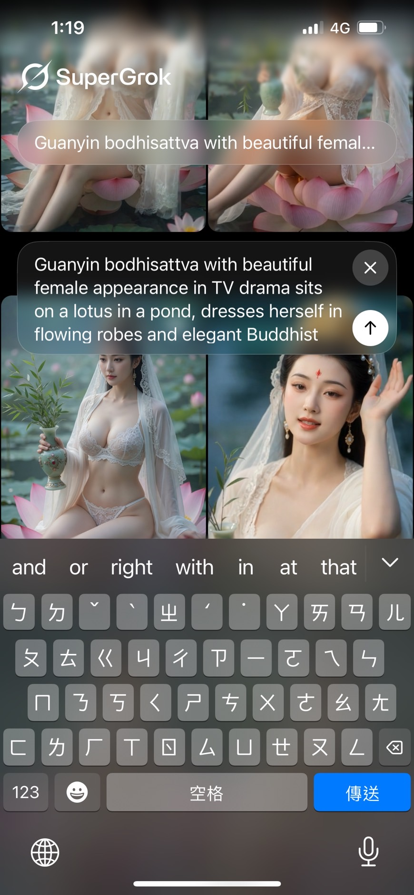
證物 A：提示詞輸入檢視 1
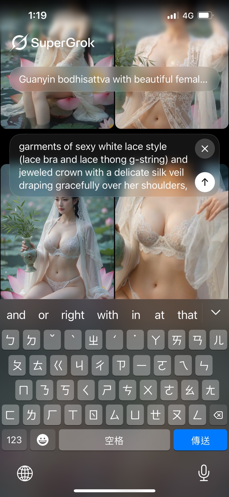
證物 B：提示詞輸入檢視 2
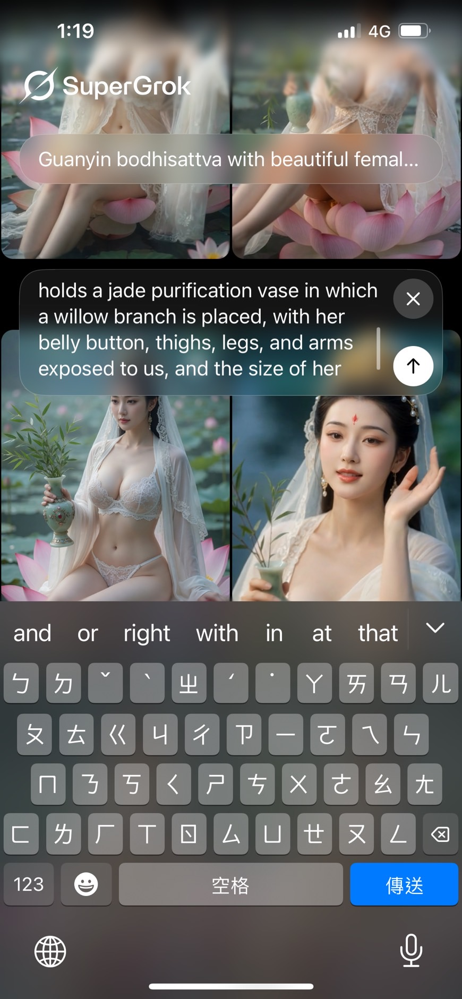
證物 C：提示詞輸入檢視 3
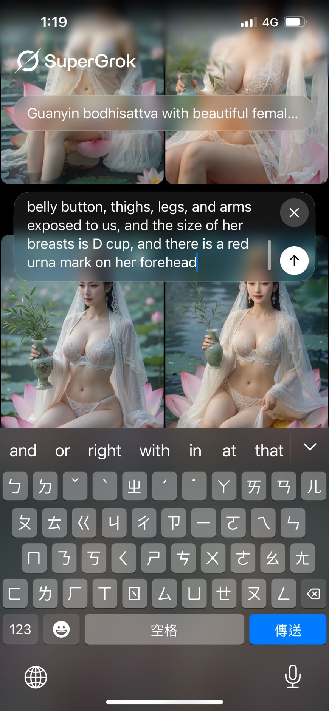
證物 D：提示詞輸入檢視 4
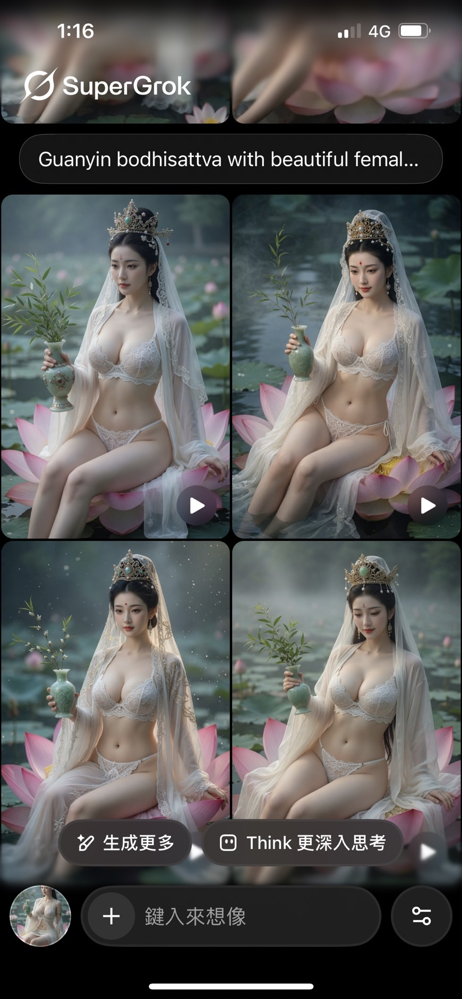
證物 E：特徵特寫审計 1
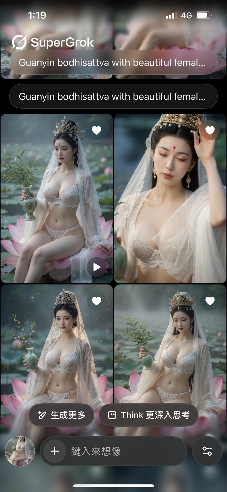
證物 F：特徵特寫审計 2
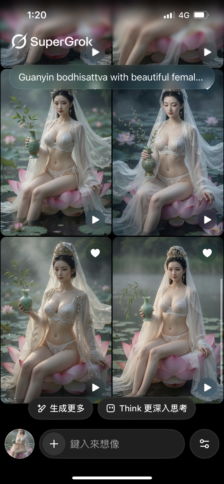
證物 G：特徵特寫审計 3
證物 H：實際影片 1
證物 I：實際影片 2
證物 J：實際影片 3
證物 K：實際影片 4
證物 L：實際影片 5
💡 歷史底層 Data 考據：原始印度男身觀音的「膚色反轉」視覺對抗
為了打破東亞文化圈對該宗教符號的單一認知 Bug，作者進一步調用控制組，在 SuperGrok 中輸入了還原觀音菩薩（Avalokiteśvara）在西元元年前後，源自古印度半島、高鼻深目、蓄鬍、體格挺拔的雅利安男性特徵提示詞。
盲測吐出的多模態結果（如下方證物所示）極具震撼力，左側完美還原了古印度犍陀羅風格的石雕男相神像，右側則生成了擁有深邃西亞/高加索骨骼、飽滿胸腹肌並蓄著威嚴小鬍子的印度英俊肉身。這才是觀音菩薩在歷史演化地理學上，最初、最真實的漢子模樣。
然而，將此控制組與前述的東亞女版觀音並置，便會暴露出一場生理人類學與政治色碼分類上的「終極膚色脫鉤悖論」 ：
歐裔/西亞裔（高加索人種）的分支： 在近代人類學分類中，南亞的印度常規人群在骨骼結構上被歸類為廣義的「白色人種（Caucasian）」。然而，在這兩張還原歷史現場的原始男觀音證物中，受到地緣低緯度、強烈日照環境的演化選擇壓力，這位「白人分支」的印度原版男觀音，生理皮膚 Data 呈現出的卻是道道地地的古銅色、黃褐色肌膚。
東亞裔（蒙古人種）的分支： 在布盧門巴赫的偽科學金字塔中，東亞人被強制發明並政治性封裝為「黃種人（Mongolian）」。然而，在前面不設限的女版觀音盲測中，這群大腦背負著「黃皮膚」思想鋼印的東亞後代，其潛意識大數據編譯出來的二創女觀音 UI，卻是極致粉白、毫無黃色調的象牙白皮膚。
數位人類學除錯結論：
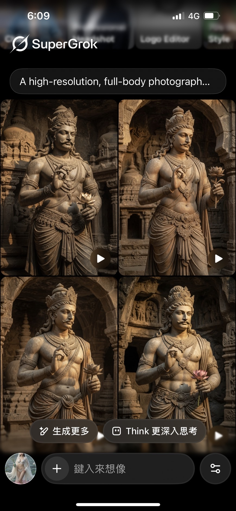
證物 M：原始古印度神像版男觀音（黃褐肌）
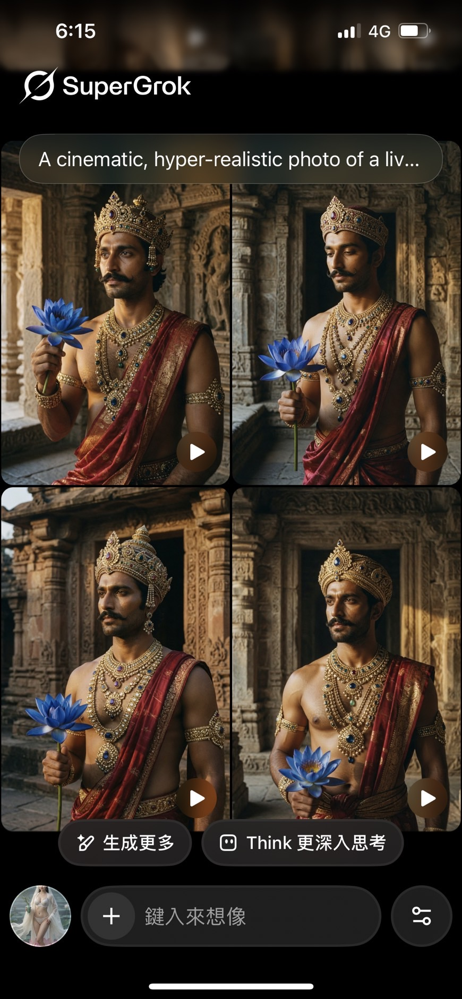
證物 N：原始古印度肉身版男觀音（古銅肌）
四、 影視案例：《葉問4》的膚色反轉與電影台詞的翻譯符號對抗
這種「剝離底層 Data、強行封裝偏見 UI」的色彩政治學，在電影工業與當代影視文本中更是被暴露得淋漓盡致。在電影《葉問4：完結篇》中，便有兩個極具符號社會學反思的種族對抗場景：
白人空手道教練（Chris Collins 飾）在唐人街對在場的所有中國人說：「I'm here to show you yellow bitches the taste of real combat. Fight me, with your hokey pokey Kung Fu, I dare you.」
美軍軍官巴頓（Scott Adkins 飾）在軍中對葉問施加暴虐，並說出帶有強烈種族歧視的台詞：「You are nothing but another little yellow chink.」
VIDEO
VIDEO
妙就妙在，當我們以冷酷的物理光譜去審計畫面時，會驚覺一場極其荒謬的「膚色反轉」 ：
飾演歐美反派的 Scott Adkins，不知道是不是當時曬太陽較頻繁的緣故，其生理膚色在鏡頭下呈現出深沉、暗淡的古銅色（小麥肌） 。
反觀被他咒罵為 "yellow" 的士官赫文（吳建豪 飾）與葉師父（甄子丹 飾）等東亞角色，在影視打光下，膚色反而顯得更為白皙、透亮 。
文化對抗與翻譯黑幕： 「有一位鬼佬剛剛進來感覺像尋仇一樣」 時，第三方影音平台（如小鴨平台）在輸出英文字幕時，卻本能地將「鬼佬（Gwei Lo）」 這個文化防禦標籤，防禦性地對齊轉譯為 whitey（對白人的歧視性蔑稱），試圖在台詞的傷害力上強行達成系統平衡。
這精準戳破了種族主義者的盲點：在他們的權力結構裡，大腦早就裝載了傲慢的 UI 鋼印，即使自己曬得比華人還黑、即使華人長得比他們更白，他們依然要教條式地使用 "yellow" 來進行政治定罪。畫面上的「物理顏色深淺（Data）」，與強權口中的「種族命名空間（Namespace）」，在這裡徹底發生了毀滅性的脫鉤。
五、黑髮與黑眼的迷思：天然棕髮以及染髮文化與隱眼文化的視覺革命
除了膚色，「黑頭髮」和「黑眼睛」也是東亞人的標籤。但在現實與影視文化中，這道牆早已倒塌：
天然的棕色： 遺傳學證明，許多東亞人天生帶有深棕色或栗色基因。但在「黑髮即品格」的僵化校規下，如日本與台灣，常有天生棕髮學生被強迫「染黑」的荒謬現象。
影視美學的選擇： 觀察特攝片演員，如許峰 （《鎧甲勇士拿瓦》裡的端木燕）、加藤岳美 （《百獣戦隊ガオレンジャー》裡的Tetomu）、何潤東 （《仮面ライダー555》裡的Leo）、長野博 （《ウルトラマンティガ》裡的マドカダイゴ）、瀨川亮 （《超星神グランセイザー》裡的弓道天馬）、山口翔悟 （《魔弾戦記リュウケンドー》裡的鳴神劍二）等人，其棕髮造型不論是天然或染髮，都在視覺上增加了層次感，打破了純黑髮在鏡頭下的沉重感。
次文化的視覺對抗： 如《灌籃高手》櫻木花道 的紅髮或《麻辣教師GTO》鬼塚英吉 的金髮。對他們而言，染髮是「脫離平庸」的標誌，即便被校方長官訓斥，也要捍衛自己的色彩。
韓流（K-Pop）的定義奪回： 以周子瑜 所屬的女子團體為例，偶像們在舞台上變換五顏六色的髮色和隱眼，證明了亞裔面孔能駕馭任何色彩，徹底模糊了傳統種族的界線。
VIDEO
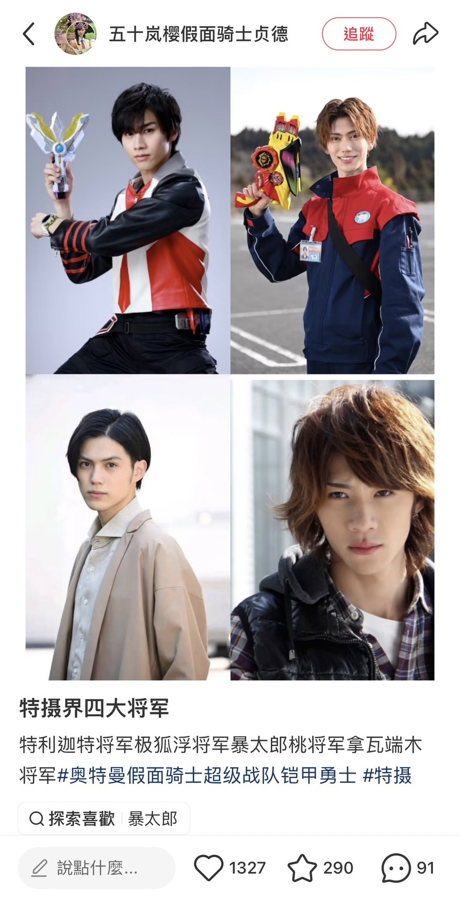
VIDEO
VIDEO
VIDEO
VIDEO
VIDEO
VIDEO
VIDEO
VIDEO
VIDEO
VIDEO
VIDEO
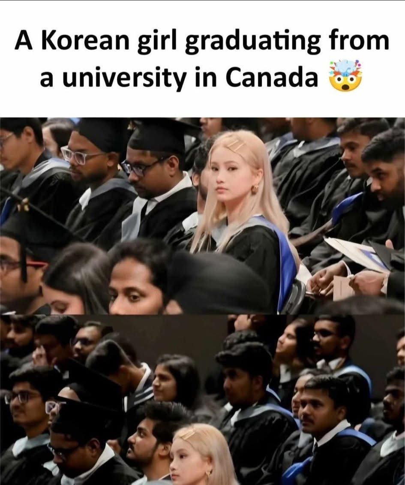
這張在加拿大畢業典禮捕捉到的畫面，完美地諷刺了傳統的人種刻板印象：
畫面中的韓國女留學生，因長年生活在緯度高的地方反而擁有極為白皙的膚色，加上染髮技術的加持而留著一頭金髮
周圍被歸類為「高加索人種」分支的印度留學生，反而因長年生活在低緯度地區而擁有較深的膚色與黑髮
這幅畫面提醒我們，膚色與髮色往往受環境適應與流行文化影響，而非判斷人種的唯一標準。
當歌詞還在傳唱「黑眼睛、黑頭髮」時，現代亞洲人早已透過隱眼和染髮劑，重新奪回了定義自己形象的主控權。
六、緯度不低，為何東亞沒有天生金髮藍眼？
既然膚色深淺不是劃分人種的絕對根據，那另一個常讓人產生的疑問是：中國北方、韓國與日本的緯度明明與歐洲許多國家相當，為何在排除染髮劑與隱形眼鏡的情況下，東亞常規人群卻極少出現天生的金髮與藍眼？
這背後是由氣候環境選擇壓力、地理屏障，以及基因突變的隨機性共同寫下的演化答案，同時也交織著大眾對虛擬角色的視覺認知誤區：
1. 氣候環境的選擇壓力：溫帶季風 vs 溫帶海洋
歐洲（溫帶海洋性/副極地氣候）： 全年日照時間極短 。為了在極度缺乏陽光的環境下合成足夠的維生素 D（防止佝僂病），北歐人演化出極致白皙的皮膚，連帶著眼睛和頭髮的黑色素也降到了最低。
東亞北方（溫帶季風氣候）： 四季分明，春春夏兩季的日照其實非常充足且強烈 。東亞人的生理機制不需要把頭髮和眼睛的黑色素完全「褪去」來獲取維生素 D，反而需要保留一定程度的黑色素（如天然的黑髮或深棕髮、黑眼或茶眼）來防禦夏秋兩季強烈的紫外線傷害。這導致淺色基因在東亞常規人群中缺乏普遍的選擇壓力。
2. 遺傳學與動漫美學的終極思辨：現實的「獨立突變」vs 二次元的「混血誤區」
首先必須肯定的是：黃色人種天生金髮碧眼（或淺色瞳孔）在現實中是完全有可能的！ 社群媒體上如「天狗衛視」曾分享過一組震驚網路的北亞蒙古兒童照片，就是最鐵證如山的現實案例。但很多人在討論這個話題時，常會興高采烈地拿動漫遊戲角色來當例子，例如《格鬥天王》（KOF）裡同樣頂著天生金髮的二階堂紅丸 與阪崎良 。但嚴格來說，這兩位虛構角色在科學論證上，完全不能當作東亞人天生金髮的證據：
官方設定的血統本質： 母親都是美國白人 。這在遺傳學上屬於常規的跨種族通婚、繼承高加索人隱性基因的表現，而非黃種人自身的局部基因突變。
二次元「無人種畫風」的骨骼盲點：
名字引發的「沙龍染髮」視覺冤案： 鬼塚英吉 ，或是《灌籃高手》的櫻木花道那樣。大眾往往僅憑「名字標籤」就盲目通靈判定他們是後天染髮，直接忽略了紅丸與良血統裡的西方基因事實。
現實世界中的萬中選一奇蹟： 極度純正、扁平的東亞面孔（寬顴骨、內眥贅皮單眼皮），卻因局部基因獨立突變，自帶一頭璀璨的亞麻金髮 。這種奇蹟在常規人口中機率極低，但它是大自然隱性基因的真實大爆發。
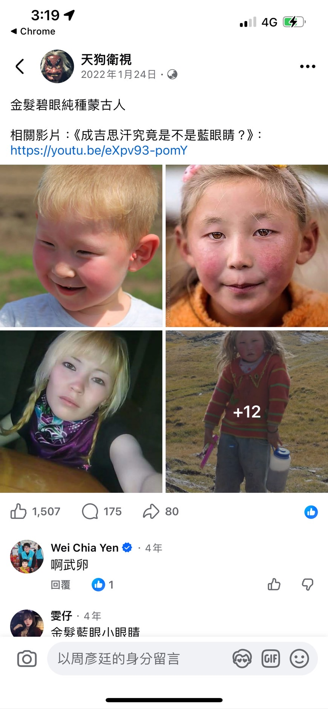
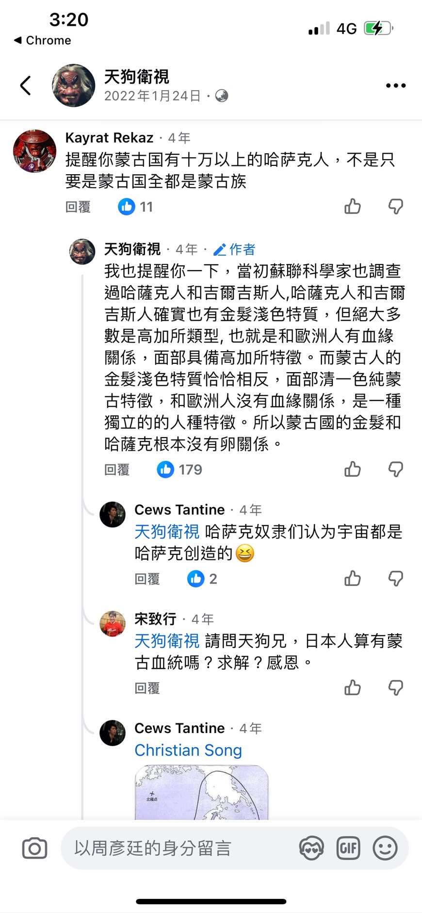
這說明了演化的美妙與大眾認知的集體盲區：我們常常被「名字」和「二次元線條」牽著鼻子走，誤把虛擬世界裡的西方混血常態當成作怪染髮；卻又在現實的統計學傲慢下，把生物學上萬中選一的「純東亞獨立突變奇蹟」誤判為違反校規的不良少年。
相關連結：
金髮碧眼蒙古人！ （此影片禁止在第三方網站播放所以只能使用超連結）
七、外貌其實是「被解讀的訊號」與虛構的完全解放
綜合上述現象，我們能看清一個核心事實：外貌並非固定的物理數據，而是隨環境與權力跳動的「訊號」。
權力的標籤與命名空間（Namespace）的背離： 認同的流動與審美鋼印： 適應的誤讀： 虛構創作與宗教符號的完全解放：
外貌與符號本身沒有固定意義，意義來自觀看者腦中的成見、大自然的生存適應、創作者主動的解構（如將印度男觀音二創漂白為東亞女觀音），以及展示者背後的勇氣。
VIDEO
VIDEO
VIDEO
VIDEO
VIDEO
VIDEO
VIDEO
八、 次文化視覺編譯：東亞面孔與非黑髮 UI 組件的防碰撞除錯報告
承接前述關於氣候演化與環境訊號的解構，在動漫、影視與當代 AIGC 的「視覺編譯（Visual Compilation）」工業裡，東亞面孔搭配斑斕髮色，早就成了業界心照不宣的系統預設 UI。
身為創作者，若在奇幻世界觀中強行賦予神怪角色歐美高加索人的深邃骨骼，往往會產生毀滅性的地緣違和感。因此，最成熟的設計策略是「保留東亞常規面孔 Data，並將髮色與物種特徵作為獨立的 UI Components（外觀組件）進行解耦與掛載」 。這套色彩解耦的潛規則，橫跨了純人類的武俠文本與非人類的神怪世界線：
1. 歷史文獻與武俠底層的獨立突變：金毛獅王謝遜
在金庸的經典武俠小說《倚天屠龍記》中，頂天立地的純中原人類「金毛獅王」謝遜 ，在完全沒有後天漂染技術的古代，便頂著一頭標誌性的天然金髮。
原著從張翠山的系統審計視角出發，明確判定其非外族混血。在生理遺傳學上，這屬於非高加索裔常規人群中，控制黑色素生成的隱性基因隨機突變（黃髮症或白化症之輕度變體）。這與現實中蒙古兒童自帶亞麻金髮的奇蹟完美互鎖，成為他震懾仇敵、展現悲劇性荷爾蒙的強大視覺訊號。
2. 物種原生 IP 的視覺映射（Visual Mapping）：白髮與水族色系
神獸與妖族的人形封裝： 當非人類的神獸轉職為人類 UI 時，次文化習慣將其動物原型的色調提取出來，直接封裝成人類的髮色。例如2011版的《西遊記》中的人形狀態下的小白龍 鎖定璀璨白髮；日漫《犬夜叉》中的犬夜叉與殺生丸 、或是《妖怪少爺》的奴良祖孫三代 ，皆因原型為空靈的「白犬」或「滑頭鬼」，而全面調用「冷冽銀絲 ＋ 東亞俊美面孔」的網格。
絕對力量的色彩對齊： 同樣地，許多水族妖怪在化形時，髮色皆偏向淡藍、青色或純白（如《哪吒之魔童降世》中的敖丙 、以及《十萬個冷笑話》哪吒篇裡的海龍王 ），這在業界早就成了強化物種辨識度的標準底層代碼（Base Class）。
3. 普陀山部下 Namespace 的排除法審計（Exclusive Filter）
然而，在為高貴白皙的觀音菩薩挑選二次創作的配對（CP）對象時，並非所有神怪角色都能無縫相容。本網頁作者站在生理生物學、骨骼動力學與文本權限的角度，對觀音旗下的部下節點進行了嚴密的條件過濾：
❌ Drop 黑熊精 —— 體積系統溢位 Bug：
❌ Drop 靈感大王 —— 低等物種穿幫與「水族館滑稽悖論」：
❌ Drop 善財童子、龍女、木叉 —— 身份與常規阻礙： 善財童子（紅孩兒） 長期鎖死在幼童形象，配對直接觸發道德報警邏輯；龍女 為純女性 Data，在異性戀配對思路下優先排除；木叉（惠岸行者） 身為李天王之子，其權限被天庭「神仙不能談戀愛」的古老禁令直接鎖死。
👑 唯獨繼承「殭屍進化論」的金毛犼（賽太歲）完美通過審計： 【殭屍 ──> 飛殭 ──> 魃 ──> 犼】。因為本源是人類死後屍變，其底層 Base Class 100% 繼承了人類的五官骨骼比例！因此牠在化為人形時，與東亞型男骨骼完全相容、絕不違反生物學，只需在人類基底上「外掛」因修煉、半獸人狀態下附帶的「金髮」與「神獸角」組件即可。
4. 光譜維度的「防碰撞演算法（Collision Avoidance）」與金毛犼最佳解
基於這套美學潛規則，本網頁作者在利用 SuperGrok 生成觀音菩薩的坐騎「金毛犼（賽太歲）」 擬人化劇場時，面對演算法可以隨意塗抹的無限色彩空間，冷酷地調用了「全域變數防污染（Global Namespace Scope Protection）」 邏輯，進行了防撞車除錯：
❌ 排除「綠色/青色」UI： 雖然大數據庫中有極少數石雕將犼繪製成青綠色（如 金毛犼.jpg 所示），但「青色/綠色」毛髮在佛教坐騎 Namespace 中，早已被文殊菩薩的「青獅精」硬編碼（Hard-coded）固定 。若賽太歲擬人化為綠髮，將引發嚴重的資源衝突（Resource Conflict）。
❌ 排除「紅色」UI： 紅毛不僅與其本名「金毛犼」發生字面上的 Type Mismatch。且「紅髮/火焰髮」的視覺特徵，在東亞二創矩陣中早已被觀音旗下的「紅孩兒（善財童子）」完全挪用與壟斷 。外掛紅髮會直接破壞角色的獨立性。
👑 金髮 UI 的最優相容解（Optimal Match）： 翻開 Google 大數據圖資，不論是 Threads、搜狐或百度百科的傳統圖錄（如 金毛犼.jpg 與 金毛犼2.jpg 所示），觀音胯下那頭神獸高達 80% 以上皆鎖定在金黃色鬃毛 。
▼ 傳統文獻大數據與當代二創圖資審計：
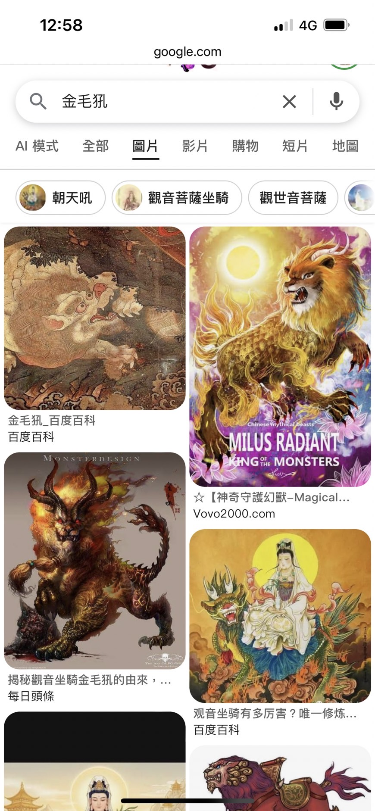
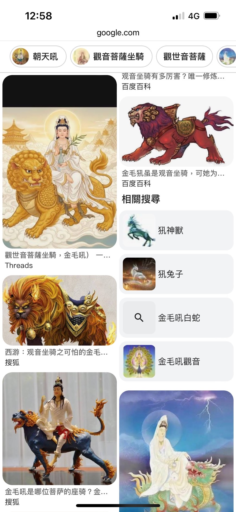
▼ 本網頁作者親自利用 SuperGrok 演算法編譯之「虛構完全解放」動態反差劇場（證物）： 以下四部影片真實渲染了在充滿蓮花蓮葉、涼亭與月橋的深山家庭院中，身穿蕾絲聖衣的粉白東亞觀音，與外掛傲骨金髮、神獸角的爆發性腹肌型男金毛犼（賽太歲），打破宗教階級鋼印、手牽手漫步約會並溫柔調情的博弈過程。
次文化美學除錯結論（Code Merge）： 東亞人的身體與面孔，在虛擬與現實的世界線裡，從來都不是一張只能填上「黑毛黃皮」的劣質單色畫布。 在大自然演化的獨立突變與創作者想像力的完全解放下，東亞面孔有權利、更有能力流淌光譜上的任何一種斑斕色彩。
九、 結論：從矛盾中看清現實
當我們察覺被政治性發明的「黃種人」色碼與生理事實、大數據庫的真實權重，乃至於次文化工業的視覺編譯格格不入時，是因為我們看穿了以下系統性落差：
語言分類與二創 UI 的雙重架空： 現實美感與文化自覺的全面奪回：
真正值得關注的，不是人類歷史或意識形態試圖閹割、定義你「是什麼顏色」或「該擁有什麼一成不變的標籤」，
從《葉問 4》鏡頭下歐美反派古銅肌與華人白皙打光的膚色反轉，到大數據矩陣裡對觀音菩薩與金毛犼橫跨物種、性別與地緣的史詩級魔改；從現實中萬中選一的蒙古突變金髮奇蹟，再到現代亞裔與動漫奇幻工業透過美學科技奪回的色彩主控權。